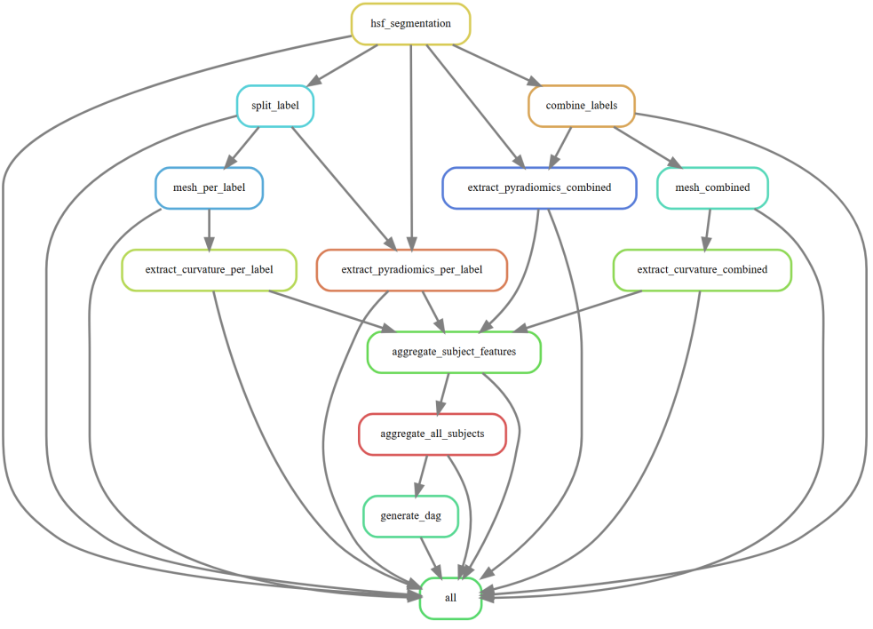

Rule Graph Explanation
Snakemake rulegraph is a dependency diagram: each box is a rule, and each arrow means “the upstream rule produces files that the downstream rule needs as input.”

top → bottom
Starting point of the actual processing: hsf_segmentation
hsf_segmentation is the first real computation step in the graph.
It produces the base segmentation output that nearly everything else depends on.
Two main branches from the segmentation
After hsf_segmentation, the workflow splits into two conceptually different paths:
A) Per-label (subfield-wise) path
2A.1. split_label
Takes the segmentation and splits it into separate label masks (e.g., DG/CA1/CA2/CA3/SUB).
2A.2 Geometry from individual labels
mesh_per_label
Builds a surface mesh for each individual label.
extract_curvature_per_label
Computes curvature (shape descriptors) from each per-label mesh.
2A.3 Texture/intensity features from individual labels
extract_pyradiomics_per_label
Extracts PyRadiomics features per label.
In the graph this rule depends on outputs from split_label and also directly on hsf_segmentation (meaning it needs both the label masks and something else from the original segmentation context).
B) Combined-label path
2B.1 combine_labels
Combines multiple labels into a single mask (e.g., “whole hippocampus” or another combined ROI).
2B.2 Geometry from combined ROI
mesh_combined
Builds a mesh for the combined ROI.
extract_curvature_combined
Computes curvature from the combined mesh.
2B.3 Texture/intensity features from combined ROI
extract_pyradiomics_combined
Extracts PyRadiomics features from the combined ROI.
It depends on combine_labels, and in the graph it also has a direct dependency line from hsf_segmentation (meaning it needs original information plus the combined mask).
Per-subject feature collection: aggregate_subject_features
This rule is where the branches converge.
It gathers the outputs from:
extract_pyradiomics_per_label
extract_pyradiomics_combined
extract_curvature_per_label
extract_curvature_combined
Then it produces a single per-subject feature file (typically a CSV/TSV/JSON) that contains all features for that subject.
Across-subject aggregation: aggregate_all_subjects
Takes all per-subject aggregated feature files from aggregate_subject_features
Merges/concatenates them into a cohort-level dataset (one table for all subjects).
Visualization artifact: generate_rulegraph
Depends on aggregate_all_subjects in the graph. Generates the workflow rule graph after the final aggregation is completed.
Final target rule: all
all is the “goal” rule. It is a list of files that must exist and be up-to-date at the end. Snakemake works backwards from each listed file, finds the rule that produces it, and builds the dependency graph.
What rules can run in parallel
Two rules can run in parallel if:
neither rule depends on the other (no arrow between them), and
all of their required inputs are already available.
Once hsf_segmentation for a subject is done:
split_label and combine_labels can run independently.
Per-label mesh/curvature and per-label radiomics can run in parallel (as long as their inputs exist).
Combined mesh/curvature and combined radiomics can also run in parallel.
Aggregations (aggregate_subject_features, then aggregate_all_subjects) happen after the needed upstream outputs exist.